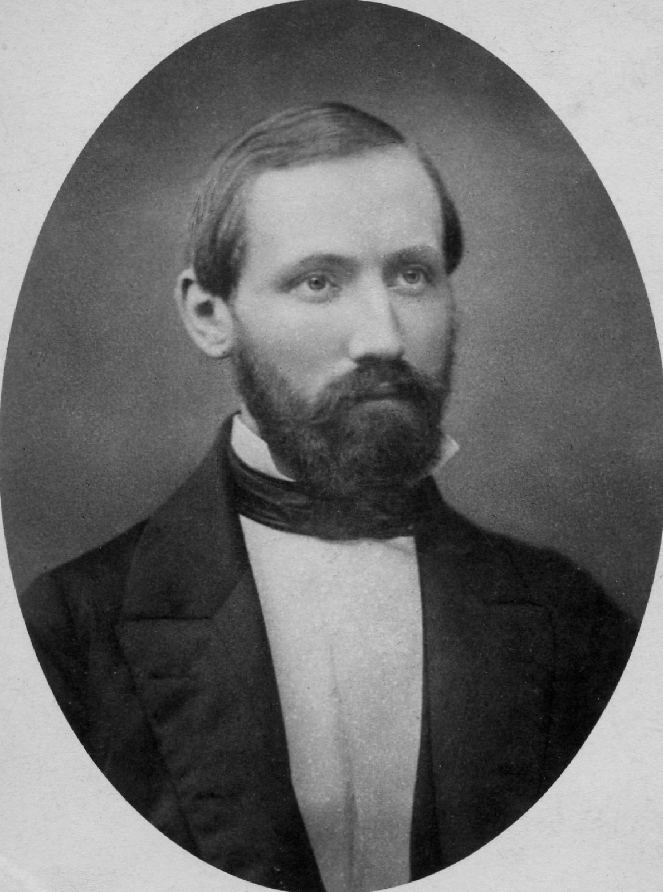
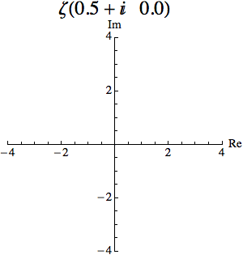
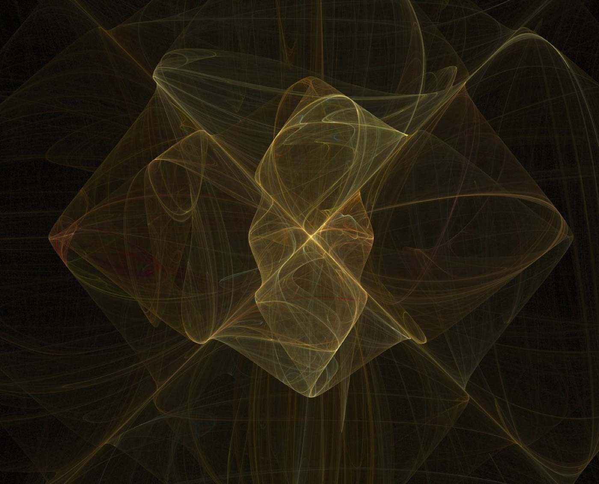
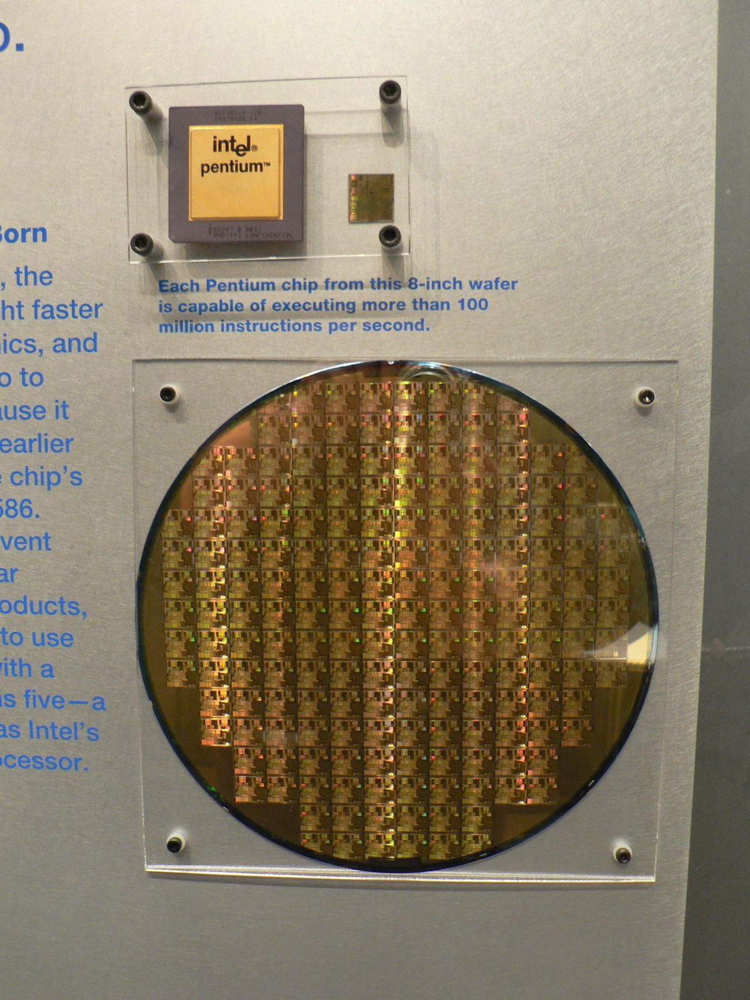
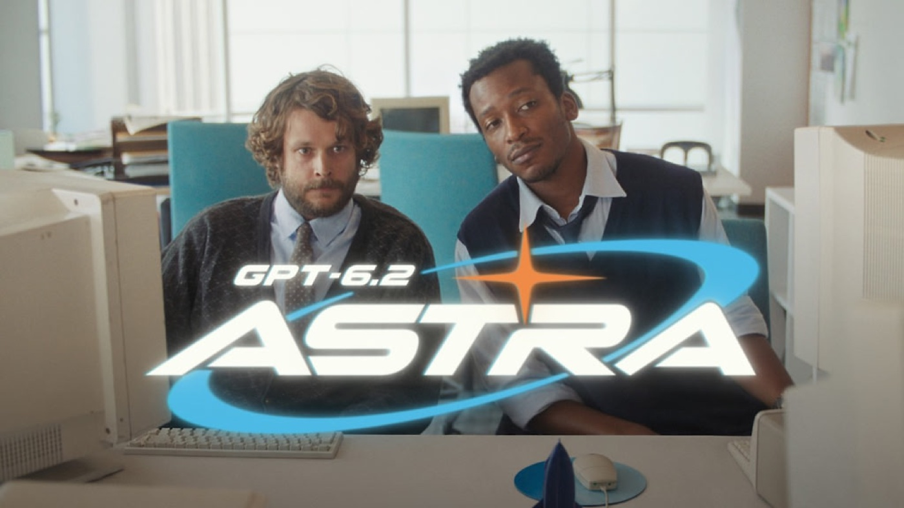
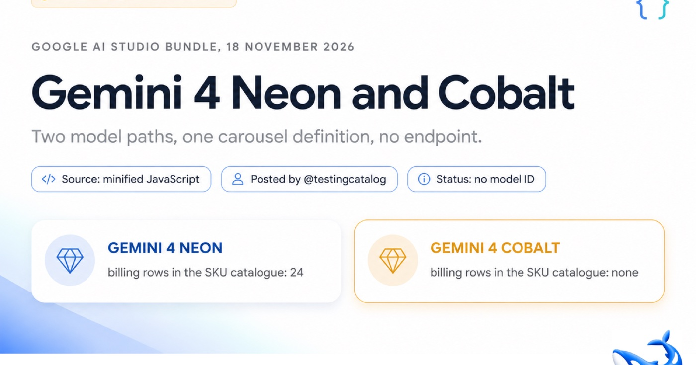
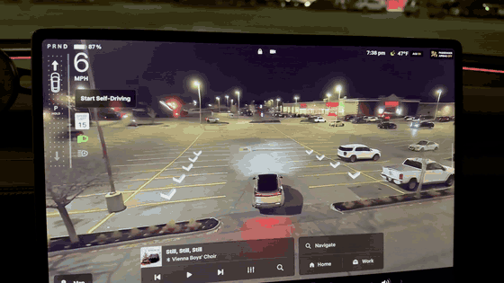

이번 주 가장 큰 사건은 AI와 함께 쓴 리만 가설 증명. 여기에 GPT-6.2, Gemini 4 Neon, Inkling 2 Mini가 한 주에.
GPT-6.2 Astra · SolGemini 4 Neon카톡 '라이언'리만 가설 증명
사진: Matt Kieffer · CC BY-SA 2.0 · 남산에서 본 서울 야경 (Wikimedia Commons)
Contents
이번 주 다섯 가지
01
리만 가설 증명
가설이란 · Lean 검증 · Clay 조건 · P=NP
02
새 모델 세 갈래
GPT-6.2 · Gemini 4 Neon · Inkling 2 Mini와 양자화
03
에이전트와 생성형 화면
Stitch Loop와 대기자 명단 · diffusion-ui
04
앱 속 AI
ChatGPT 리디자인 · 카톡 '라이언' · Gemini GIF
05
Tesla FSD v15
Reality View · "안전 25배"는 자체 수치
확정된 사실루머·미확인판단벤더 수치
FSDFull Self-Driving · Tesla의 주행 보조 소프트웨어P=NP · 검증이 쉬운 문제는 푸는 것도 쉬운가를 묻는 미해결 문제GIFGraphics Interchange Format · 짧게 반복되는 움짤 형식
At a glance
열한 항목, 단서까지 같이 읽어야 한다
항목
판정
핵심
GPT-6.2 Astra·Sol
출시
11/17 출시
Gemini 4 Neon
출시
11/16 유출 → 11/18 정식
Gemini 4 Cobalt
코드 유출
공식 발표 없음
Gemini 4 Helium
티저만
모델 ID·가격 없음
Inkling 2 Mini
출시
11/20, 오픈 웨이트
"Gemini Loop"
이름 정정
Stitch Loop · 대기자 명단
항목
판정
핵심
리만 가설 증명
Lean 검증
Clay 미인정 · P=NP와 무관
ChatGPT 리디자인
공개
한국은 대상 제외
카톡 '라이언'
해석 주의
12/16은 약관 시행일
Gemini GIF
출시
한국 포함
FSD v15 · diffusion-ui
배포·공개
11/21 배포 · 연구 프리뷰
자료: 각 사 발표·릴리스 노트, 본문 장별 출처 · 2026.11.23 기준
오픈 웨이트 · 학습된 모델 가중치를 내려받아 쓸 수 있게 공개ID · API에서 모델을 부르는 이름

01
리만 가설, 167년 만의 증명
Lean 검증은 통과, 공식 인정은 아직
배경: Wikimedia Commons 기여자 · CC BY-SA 3.0 · 리만 제타 함수 절댓값 그래프 / 우측: 작자 미상 · Public domain · 베른하르트 리만 (Wikimedia Commons)
01 · 리만 가설이란
모든 ‘의미 있는 영점’은 한 줄 위에 있다
① 리만 제타 함수
ζ(s) = 1 + 1/2s + 1/3s + 1/4s + …
이 합을 복소수 s 전체로 넓힌 함수
② 가설
음의 짝수(−2, −4, …)에 있는 자명한 영점을 빼면, 나머지 영점은 모두 실수부 = ½인 세로선(임계선) 위에 있다
③ 167년의 역사
1859 리만 논문 → 2000 Clay 밀레니엄 문제 지정 → 2026.11.20 증명 발표

임계선 위의 점을 ζ로 옮긴 궤적. 원점을 지날 때가 영점 · YoshiGosu, CC BY-SA 4.0 (Wikimedia Commons)임계선에 늘어선 영점 일러스트 · Kingy.ai 기사 이미지
영점 · 함수값이 0이 되는 입력임계선critical line · 복소평면에서 실수부가 ½인 세로선ζ · 그리스 문자 제타
01 · 왜 중요한가
영점의 위치가 소수의 질서를 정한다
애니메이션 · 직접 계산한 실제 값π(x)는 실제 소수 개수 · Li(x)·x/ln x와 비교 · 자체 계산
소수와의 연결
x 이하 소수 개수 ≈ x / ln x. 리만 가설이 참이면 오차가 √x 수준으로 작다
조건부 정리들
“리만 가설이 참이라면 …”으로 시작하는 정리 수천 개가 한꺼번에 확정
일반화된 리만 가설
같은 주장을 디리클레 L-함수로 확장. 소수 판정 알고리즘 분석 등에 쓰임
자료: Nature, Scientific American · 그래프는 일반 설명용
π(x) · x 이하 소수의 개수ln · 자연로그GRHGeneralized Riemann Hypothesis · 일반화된 리만 가설
01 · 발표와 검증
증명은 논문이 아니라 Lean 코드로 나왔다 확정
11.20 발표 · 알푀게 + Claude
아카이브
0개
파일 수 (약)
0만 개
언어
Lean 4
대상: 리만 가설과 일반화된 리만 가설 둘 다
누가 확인했나
Lean/Mathlib 커뮤니티 공동 성명: 명제와 증명 모두 정확
MIT 앤드루 서덜랜드 등 독립 연구자: 별도 컴파일 성공
Nature 기사 대표 이미지 (James Brittain/Getty) · 리만 가설 증명 반응 기사
자료: Nature, Scientific American · 2026.11.20~22
Lean 4 · 수학 증명을 코드로 쓰고 컴퓨터가 검사하는 증명 보조기Mathlib · Lean용 공동 수학 라이브러리컴파일 · 코드를 기계가 처리·검사하는 과정
01 · Lean 코드란
명제와 증명을 코드로 쓰면, 컴퓨터가 한 줄씩 검사한다
-- Mathlib에 있는 리만 가설의 정의 (명제)defRiemannHypothesis : Prop :=
∀ (s : ℂ) (_ : riemannZeta s = 0)
(_ : ¬∃ n : ℕ, s = -2 * (n + 1)) (_ : s ≠ 1),
s.re = 1 / 2-- 증명의 모양 (예시 · 실제 이름·구조 아님)theoremriemann_hypothesis : RiemannHypothesis := by… 17.5만 개 파일에 걸친 보조정리들 …✓ 커널 검사 통과
읽는 법: ζ(s)=0이고, 음의 짝수도 1도 아닌 모든 복소수 s → 실수부는 ½
Lean
증명 보조기(proof assistant). 2013년 Microsoft Research 레오나르도 드 모라가 시작, 현재 Lean 4
Mathlib
수학자들이 함께 쌓는 Lean 라이브러리. 제타 함수와 리만 가설 정의가 이미 들어 있음
커널
모든 추론 단계를 규칙대로 확인하는 작은 검사기. 이것만 믿으면 된다
자료: Lean·Mathlib 공개 문서(정의 원문), Scientific American · 코드 아래 정리 줄은 설명용 예시
Prop · 참·거짓을 따질 수 있는 명제ℂ · ℕ · 복소수 · 자연수s.re · s의 실수부theorem … by · 정리 선언과 그 증명 시작
01 · 왜 검증하나
사람이 못 읽는 분량, 기계는 한 단계도 안 봐준다
✍️
1. 명제 옮기기
문제를 Lean 문장으로
→
🧩
2. 증명 작성
사람 + Claude가 보조정리를 쌓음
→
🔬
3. 커널 검사
모든 단계를 규칙대로 확인
→
✅
4. 통과 / 실패
한 줄이라도 틀리면 실패
분량
17.5만 개 파일은 사람이 줄마다 확인할 수 없다
AI 증명의 함정
그럴듯한 틀린 단계가 숨을 수 있다 → 기계가 걸러냄
남는 위험
명제를 잘못 옮기면 엉뚱한 것을 완벽히 증명 → 그래서 ‘명제’도 따로 확인

Scientific American 기사 이미지 · Lean 검증 기사
자료: Scientific American, Nature · 2026.11
보조정리lemma · 큰 증명을 위해 먼저 증명해 두는 작은 정리커널 · Lean에서 증명을 최종 판정하는 핵심 검사기
01 · 공식 인정
Clay 상금까지는 최소 2년, 홈페이지는 여전히 ‘미해결’
메이너드
증명이 맞을 것으로 본다
그랜빌
설명 문서가 엉망이다 · 발표 시점에도 의문
📄
1. 게재
학술지 등에 정식 게재 · 아직 안 됨
→
⏳
2. 2년 경과
게재 후 2년 대기
→
🤝
3. 수학계 수용
전반적 인정
→
🏅
4. 상금 심사
이때부터 대상
자료: Nature, Kingy.ai(Clay 규정 정리), Clay 연구소 홈페이지 · 2026.11.23 확인
Clay 연구소 · 밀레니엄 문제 7개에 각 100만 달러 상금을 건 미국 수학 연구소
01 · 왜 P=NP인가
리만 가설 이야기에 P=NP가 따라 나오는 세 가지 이유
① 같은 밀레니엄 문제
둘 다 Clay 7대 문제. “밀레니엄 문제 해결” 소식에서 둘이 섞여 전해짐
② 찾기 vs 검증 구조
검증 하루, 발견 167년. “확인은 쉬운데 찾기는 어려운 문제”가 곧 NP
③ 괴델의 1956년 편지
폰 노이만에게 “증명을 기계가 빨리 찾을 수 있나” 질문 → P vs NP의 원형. P=NP라면 짧은 증명 찾기 = 검증만큼 쉬움
판단
AI가 문제 하나의 증명을 찾은 것 ≠ 모든 NP 문제를 빨리 푸는 방법
P≠NP(왼쪽)와 P=NP(오른쪽)일 때 문제 집합의 관계 · Behnam Esfahbod, CC BY-SA 3.0 (Wikimedia Commons)
자료: Scientific American, Nature · 괴델 편지는 계산 복잡도 이론의 통설
P · 빠르게(다항 시간에) 풀 수 있는 문제NP · 답이 주어지면 빠르게 검증할 수 있는 문제NP-완전 · NP 중 가장 어려운 문제들. 하나만 빨리 풀어도 전부 풀림
01 · P=NP 정정
리만 가설이 풀려도 P vs NP는 그대로
이번 사례가 보여 준 것
하루
Lean으로 검증
vs
0년
증명을 찾기
검증은 쉬워도 찾기는 어렵다 · P≠NP 직관과 닮은 장면
메모 정정
“정답을 알면 풀기도 쉽다” → 정해진 명제가 아니라 열린 질문
서로 다른 문제
리만 가설과 P vs NP는 별개의 밀레니엄 문제
10월 말 ETH 반증 주장
사실이어도 P vs NP 해결은 아님
자료: Scientific American, Nature · 2026.11
P vs NP · 답을 빨리 검증할 수 있는 문제(NP)를 빨리 풀 수도(P) 있는가ETHExponential Time Hypothesis · 지수 시간 가설

02
새 모델 세 갈래
GPT-6.2 · Gemini 4 Neon · Inkling 2 Mini
배경·우측: Naotake Murayama · CC BY 2.0 · Pentium 칩 웨이퍼 (Wikimedia Commons)
02 · GPT-6.2
Astra는 20% 인하, Sol은 가격 그대로
API 가격 · 100만 토큰당
Astra 출력$40
Astra 입력$8
Sol 출력$10
Sol 입력$2
Astra: 고난도 전문 업무용 · 이전 모델 대비 20% 인하 / Sol: 일상 업무용 · GPT-6.1 Sol과 동일
GPT-6.2 발표 이미지 · SiliconANGLE 기사
벤더 수치
⅓ 미만 · GPT-6 Astra 대비 작업당 비용. 성능은 더 높다고 주장 (독립 검증 전)
자료: OpenAI 개발자 커뮤니티, SiliconANGLE · 2026.11.17
APIApplication Programming Interface · 개발자가 모델을 코드로 부르는 창구토큰 · 모델이 글을 처리하는 단위. 한국어 한 글자 ≈ 1~2토큰
02 · GPT-6.2
‘AI 자기개선’ High를 넘긴 첫 외부 배포 모델
확정
준비성 프레임워크
‘AI 자기개선’ 항목 High 기준 충족. 외부에 배포된 모델로는 처음
확정
사이버 역량 상승
역량이 크게 오른 만큼 보안 안전장치를 강화해 출시
평가 엇갈림
리뷰 반응
OpenAI: 출시 직전 며칠의 개선을 일부 리뷰어가 반영 못 했다고 해명

GPT-6.2 Astra 발표 이미지 · OpenAI 개발자 커뮤니티 공지
읽는 법
High는 해당 위험 역량이 높은 수준이라는 뜻이고, 그만큼 배포 전 안전장치를 요구한다는 신호다. 자기개선은 AI가 AI 연구 자체를 앞당길 수 있는 능력을 가리킨다.
자료: OpenAI 개발자 커뮤니티, SiliconANGLE · 2026.11.17
준비성 프레임워크Preparedness Framework · OpenAI가 위험 역량을 등급으로 평가하는 기준
02 · Gemini 4
Neon은 출시, Cobalt·Helium은 단서뿐
Carbon최상위기존
Neon컨텍스트 100만 토큰 · 입력 $3 / 출력 $1511.18 정식
Hydrogen고속기존

유출 분석: Neon은 과금 항목 있음, Cobalt는 없음 · OrcaRouter 블로그 이미지
루머·미확인
Cobalt
AI Studio 프런트엔드 코드에 models/cobalt 문자열. 모델 ID·과금 항목 없음, Google 미확인
루머·미확인
Helium
DeepMind 직원 티저에서 기존 4개 다음으로 빛나는 장면. Flash-Lite급 추측. 과거 인도용 요금제 이름이기도
자료: Google Cloud 문서, OrcaRouter(유출 분석), TechCityAuthority(티저) · 2026.11.16~18
컨텍스트 · 모델이 한 번에 읽을 수 있는 입력 길이AI Studio · Google의 Gemini 개발자 도구Flash-Lite · Gemini의 가장 가볍고 싼 등급
MoEMixture of Experts · 입력마다 일부 전문가 층만 켜는 구조B · 10억(billion) 개활성 파라미터 · 한 번 계산에 실제로 쓰이는 파라미터
02 · Inkling 2 Mini · 양자화
처음부터 4비트로 학습해, 변환 손실 없이 Mac에 올렸다
숫자 하나에 쓰는 비트 수
BF16
16비트 · 일반 저장
MXFP8
8비트 · 마지막 4개 층
NVFP4
4비트 · 나머지 20개 층
배포 가중치 정밀도 · 24개 층
학습 정밀도 = 배포 정밀도 → 학습 뒤 깎아 내는 변환 손실 없음 (Thinking Machines 설명)
계산값 · 근사
BF16로 담으면≈ 52.8GB
전부 NVFP4로 가정≈ 15GB
26.4B × 비트 수. NVFP4는 16개 값마다 스케일을 붙여 실질 약 4.5비트
가지치기 + 회복
전문가 384 → 128개 (⅔ 제거, 토큰마다 8개 선택) · 내부 큰 모델에서 1조 토큰 증류로 성능 회복
어디서 돌리나
RAM 32GB 이상 Mac + Ollama · NVIDIA DGX Spark · GGUF는 Unsloth·llama.cpp
자료: Thinking Machines 「Introducing Inkling 2 Mini」(NVFP4 and low-bit quantization 절) · 2026.11.20 · 용량은 이 문서에서 계산
양자화 · 숫자를 더 적은 비트로 표현해 모델을 작게 만드는 기술NVFP4 · NVIDIA의 4비트 부동소수점 형식MXFP8 · 묶음마다 스케일을 공유하는 8비트 형식GGUF · llama.cpp가 쓰는 로컬 모델 파일 형식증류 · 큰 모델의 출력을 작은 모델이 따라 배우게 하는 학습
03
에이전트와 생성형 화면
Google Stitch Loop · Runway diffusion-ui
배경: D-Kuru · CC BY-SA 3.0 AT · 디스플레이 픽셀 패턴 / 우측: Jaredryandloneria · CC BY-SA 4.0 · LCD 픽셀 확대 (Wikimedia Commons)
GPT-Live · OpenAI의 실시간 음성 대화 모델전이중full duplex · 듣기와 말하기를 동시에APIApplication Programming Interface · 개발자가 모델을 앱에 붙이는 창구대기standby · 말이 없을 때 낮은 요금으로 기다리는 상태
04 · 카카오톡 '라이언'
라이언이 할 수 있는 일: 지금 넷, 예정 넷
기능
분류
상태
언제부터
부르기
호출
발표됨
카톡 화면을 두 손가락으로 쓸기
메시지 전송
소통
첫 공개
12월 중 CBT부터
일정 관리
생활
첫 공개
12월 중 CBT부터
웹 검색
정보
첫 공개
12월 중 CBT부터
카톡 설정 변경
설정
첫 공개
12월 중 CBT부터
주문
커머스
추가 예정
미정
선물
커머스
추가 예정
미정
예약
생활
추가 예정
미정
송금
금융
추가 예정
미정
KakaoTalk 로고 · Kakao Corp., Public domain (Wikimedia Commons)
이름 정리
서비스 카나나 스페이스 첫 페르소나 라이언
자료: 아시아투데이(카나나 스페이스 12월 파일럿), 중앙이코노미뉴스 · 2026.11
CBTClosed Beta Test · 일부 신청자만 쓰는 비공개 시범 운영페르소나 · AI 비서가 쓰는 캐릭터·말투
04 · 카카오톡 '라이언'
12월 16일은 출시일이 아니라 약관 시행일
12.16
AI 서비스 공통 이용약관 시행
서비스 출시일 아님
12월 중
사전 신청자 일부 비공개 베타(CBT)
전체 사용자 대상 아님
이후 (일정 미정)
주문 · 선물 · 예약 · 송금 추가 예정
흔한 오해
“12월 16일 카톡에 AI 비서 출시”
정확한 표현
12/16 약관 시행 → 12월 중 일부 사전 신청자 CBT
자료: 중앙이코노미뉴스(약관 12.16), 아시아투데이(12월 파일럿) · 2026.11
CBTClosed Beta Test · 비공개 시범 운영약관 시행일 · 새 이용 조건이 효력을 갖는 날
04 · Gemini GIF
Gemini 앱에서 3초 반복 GIF, 한국도 된다
확정 · 11.20
GIF 길이 (약)
0초 반복
입력
텍스트 · 사진 · 영상
대상: Google AI 구독자 · 지원 국가에 한국 포함
바탕 모델 · Omni 1.2 Flash
11.05 GA · 최대 15초 영상 · 4K 업스케일
미확인
‘GIFable’이라는 이름은 공식 자료에 없음
동작 재현 · 실제 화면 아님
✦김이 피어오르는 커피잔 GIF
✦ GIF 생성 중…
↻ GIF3초
자료: Android Authority · 2026.11.20
GAGeneral Availability · 정식 출시4K 업스케일 · 저해상도 영상을 4K로 키우는 기능
05
Tesla FSD v15
Reality View와 “안전 25배”
배경·우측: Dllu · CC BY-SA 4.0 · Tesla Model Y 2025, Santana Row (Wikimedia Commons)
05 · Tesla FSD v15
차 위에서 내려다보는 Reality View, 단 AI4 차량만

실제 화면 영상 · 2배속FSD v15 주차 UI와 Reality View · @TeslaNewswire 게시 영상(X)에서 GIF로 변환
확정
11.21 배포 시작 → 12월 홀리데이 업데이트로 확대
차량 위 가상 카메라 시점으로 주변을 실시간 생성
FSD가 어디로 갈지 표시 · 탭해 목적지 지정
지원: AI4 하드웨어 차량만
벤더 수치
“안전 25배”
검증 낮음중간높음
지표 정의·비교 기준 비공개
자료: Digital Trends(11.21), 영상 @TeslaNewswire(X, Basenor 게재 11.22)
AI4 · Tesla 차량에 들어가는 4세대 자율주행 컴퓨터(옛 HW4)FSDFull Self-Driving · 운전자 감독이 필요한 주행 보조
Summary
세 줄 요약과 12월 일정
∑
리만 가설
Lean 검증과 명제 확인 통과. Clay 인정은 게재 후 최소 2년. P vs NP와는 별개.